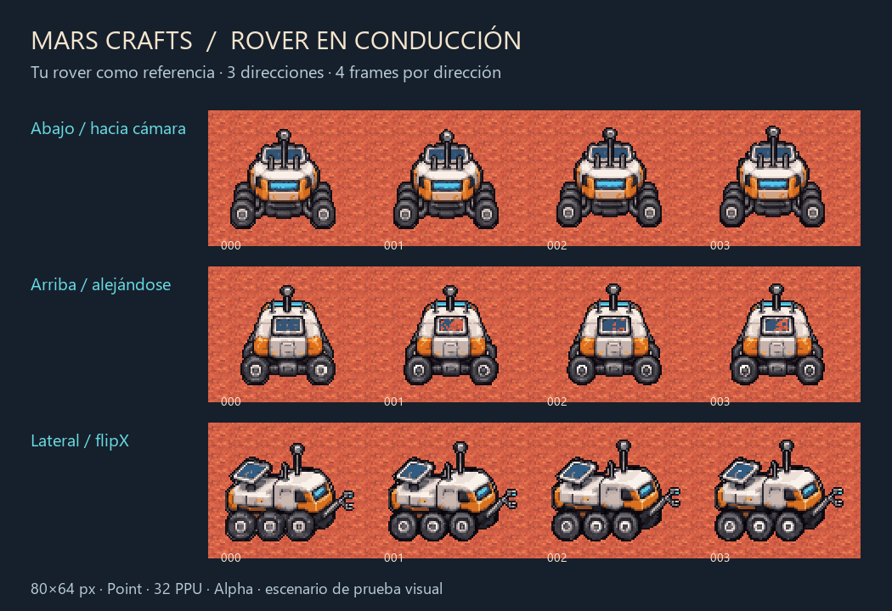

Rover en conducción
Referencia del usuario · abajo, arriba y derecha · cuatro frames cada uno. La izquierda usa el espejo que ya aplica el controlador Unity.
Comparación de frames

Vista previa de PNG. Para jugarlo en la escena, usar el menú de Unity Mars Crafts → Art → Aplicar animación del rover a Marte.